A window in a sunlit room, and the view passes through a day.
Provençal limewash, lavender shutters and hand-painted tile, set with the symmetry of a miniature film set. Outside the window, public-domain paintings stand in for the light: a Norwegian dawn, fjord cliffs at morning, a terracotta coast at noon, a golden hour.
1 · Hero imagery
Rendered sets (SVG + painting, finished with a canvas-weave pass), served as AVIF, WebP and JPEG. Desktop 16:10, phone portrait crop.
hero/window-dawn-* · Dawn. The room is still blue; the light is only outside. View: J. C. Dahl, View over Hallingdal, 1844 (The Met, CC0), graded cold blue to gold.
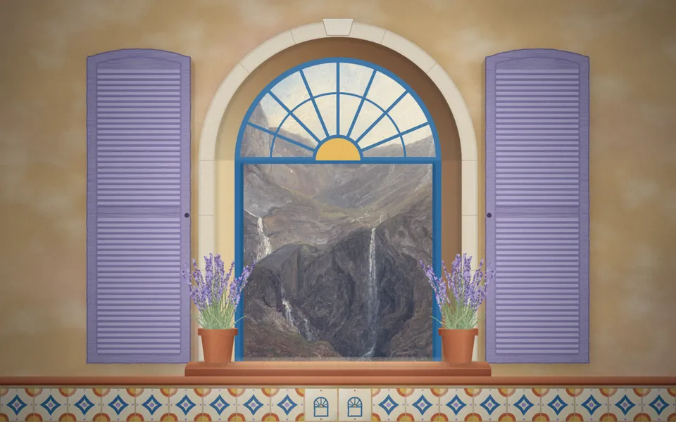
window-fjord · Morning. Thomas Fearnley, Gudvangen, 1839 (The Met, CC0).
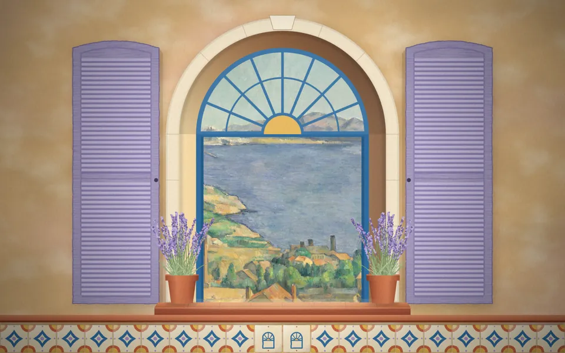
window-noon · Noon, second hero. Paul Cézanne, The Gulf of Marseille Seen from L'Estaque, c. 1885 (The Met, CC0).
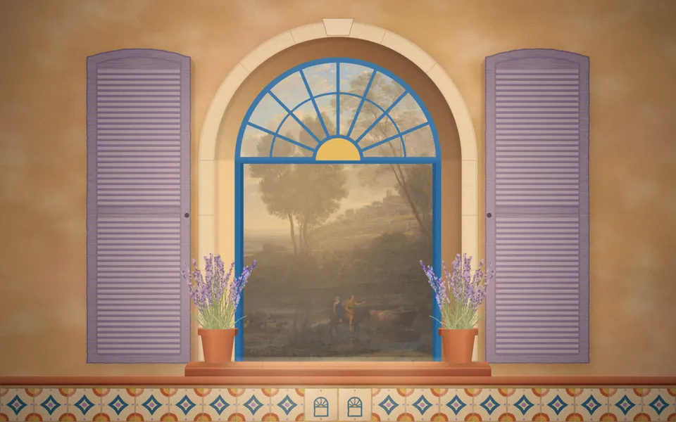
window-gold · Golden hour. Claude Lorrain, Sunrise, 1646–47 (The Met, CC0).
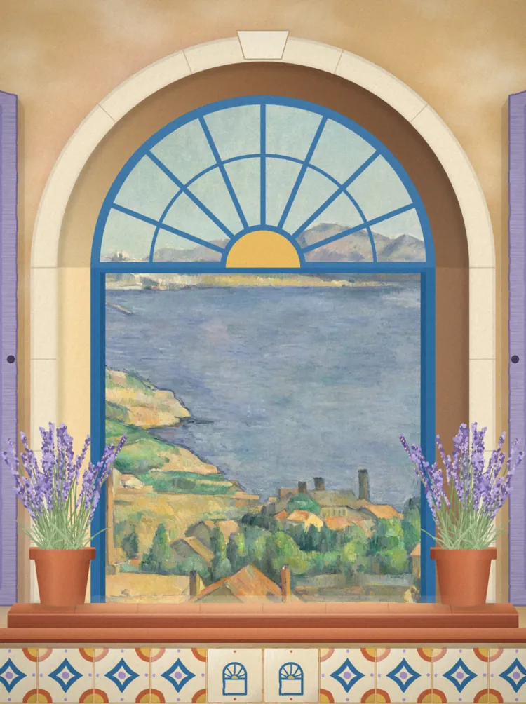
window-*-portrait · phone crop, centred on the window.
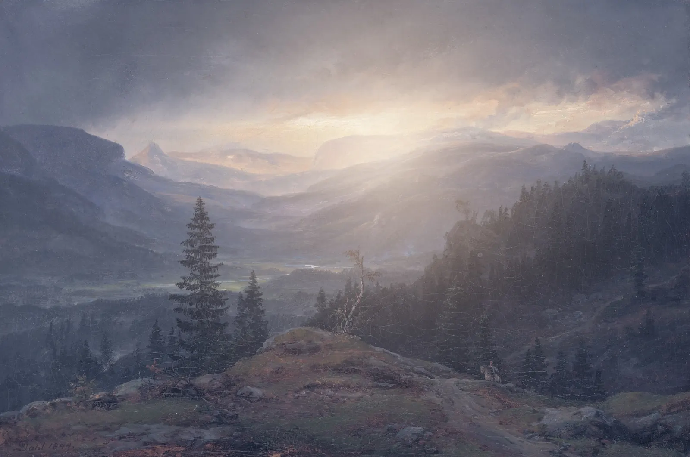
views/view-dawn · the plates alone are a full-bleed option for chapter openers (all four in views/).
2 · Palette: Riviera, at first light
Warm limewash for the room, ochre and terracotta for the craft, sea blue for structure, lavender for the shutters, a cold dawn blue that only appears as light.
Limewash#E8BF86 oklch(82.8% 0.087 75.2)
Ochre#E2A93B oklch(77.0% 0.139 80.0)
Terracotta#B9532F oklch(56.5% 0.141 39.3)
Sea blue#2F6C9E oklch(51.5% 0.101 246.3)
Dawn blue#6A7FB6 oklch(60.2% 0.088 267.7)
Lavender#A59CBF oklch(71.2% 0.051 296.9)
Lavender deep#6E6496 oklch(53.3% 0.078 292.7)
Rose wall#E6B3A0 oklch(80.8% 0.065 41.4)
Cream#F4E9D4 oklch(93.7% 0.030 83.6)
Ink#2A2233 oklch(26.9% 0.033 305.8)
3 · Type
ALBRETSEN
Quiet software that pays for itself.
Products · Writing · Since 2016
Fun Libs was built at seventeen and has passed 113,000 installs with no marketing. MCP Emails gives AI agents an inbox: seventeen tools and about a hundred email providers, open source. One outside engagement at a time.
Display: Cormorant Garamond 500/600, italic 500 (SIL OFL). Caps set with .3em tracking for signage and labels. Text: EB Garamond 400 and italic (SIL OFL), 19–21px, line-height 1.6. Both vendored as Latin woff2 in fonts/ (≈170 KB total; load the two upright cuts first).
4 · Identity
The mark is the window: an arch, a transom, and a fanlight whose glazing bars are the rays of a rising sun.
wordmark.svg · outlined Cormorant Garamond, hairline rules around “AS”.
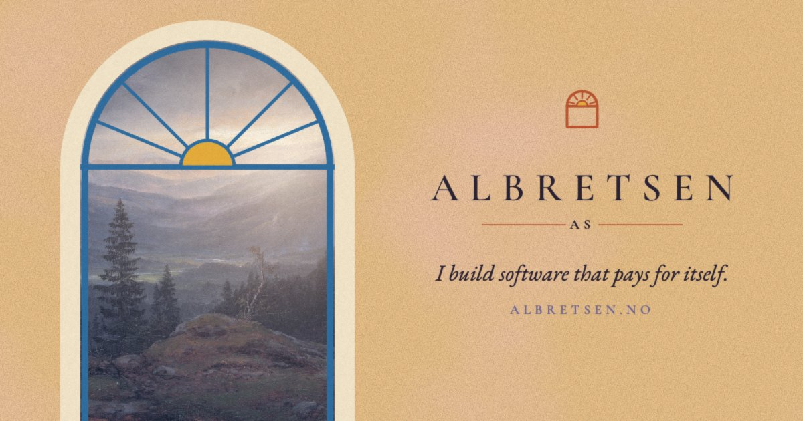
og.jpg 1200×630.
5 · Products in the world
Each live product is an object in the house, carrying its real logo: a postcard stamp, a tile set into the wall, a painted sign, a lit window.
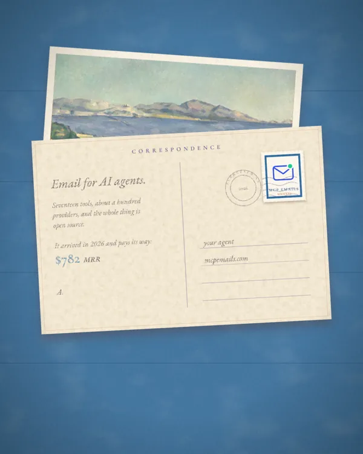
MCP Emails · the postcard; the stamp is the real logo mark. Flip it below.
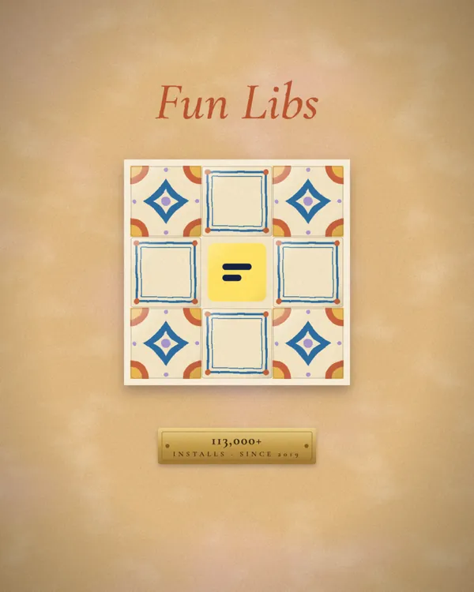
Fun Libs · the real v5 icon as the centre tile; brass plate: 113,000+ installs.
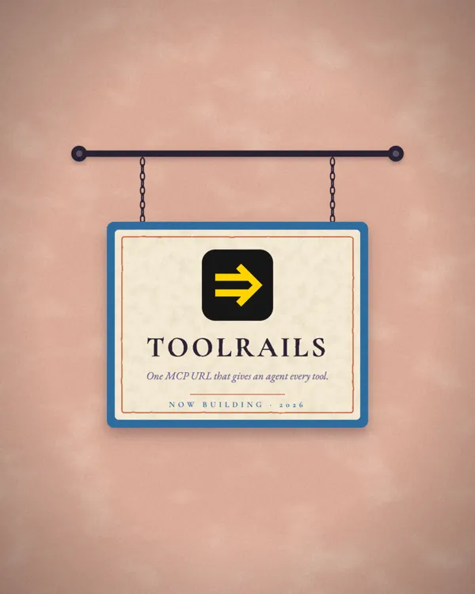
Toolrails · a painted sign hanging from a rail (it sways, below).
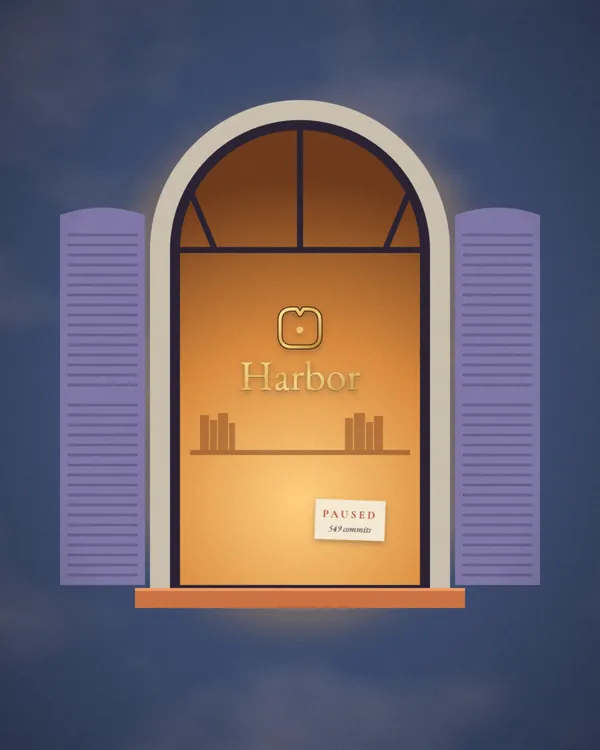
Harbor · gilded on the glass of a lit window; a card says paused.
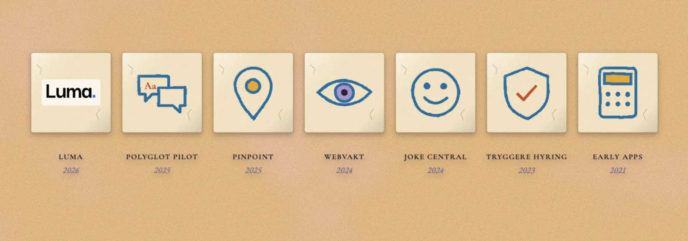
products/retired-row + single tiles retired-*.webp · Luma uses its real logo; the others are stand-ins painted in the house tile style.
6 · Motion study
motion.css + motion.js. Six named motions; everything is still under reduced motion.
Dolly · slow parallax through the window
Scroll inside the box. Three layers: painting (far), wall (mid), sill and lavender (near).
scroll ↓
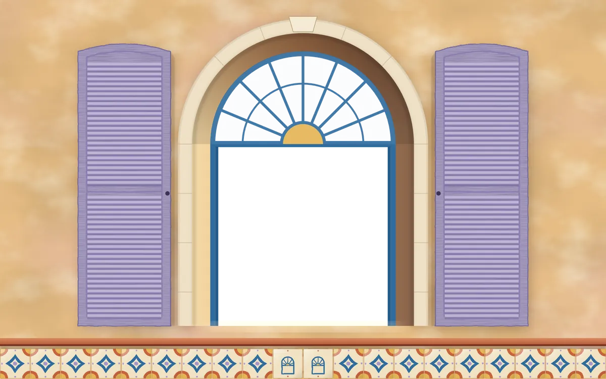
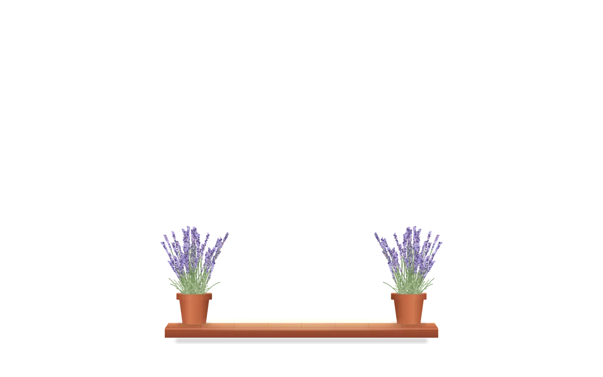
…
Day pass · scroll is the time of day
On the page, --day follows the scroll. Here a slider drives it.
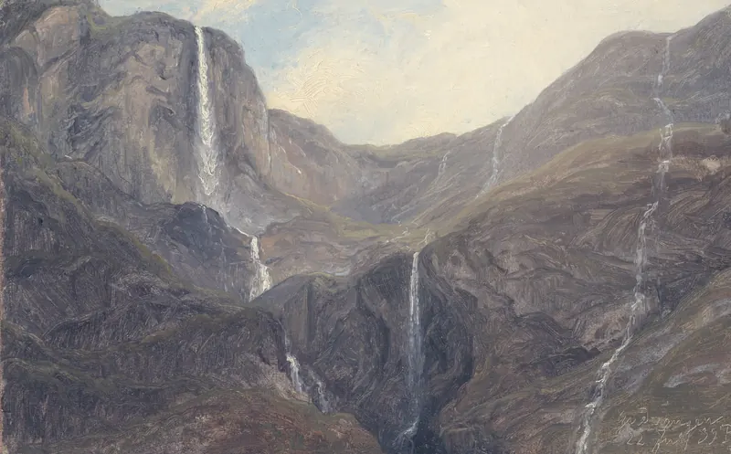
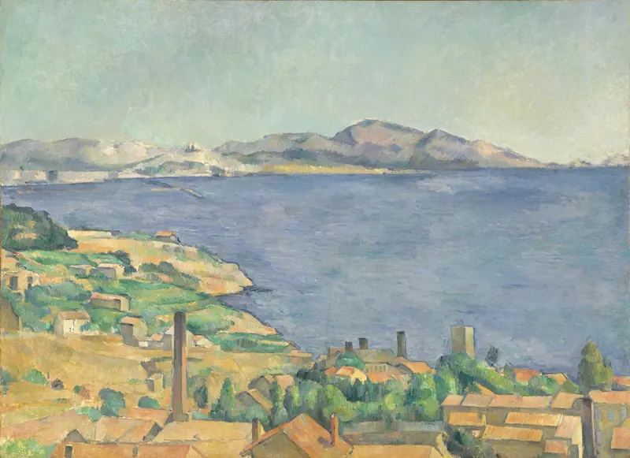
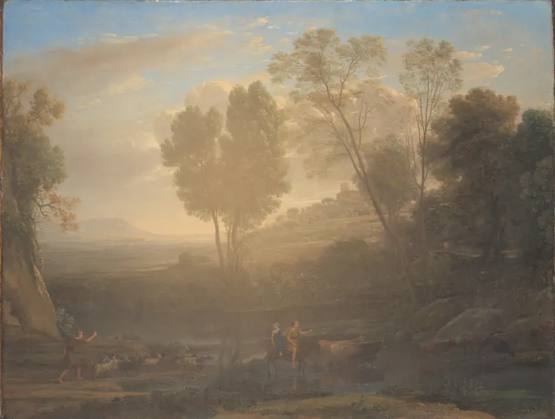
Dawn
Postcard flip
The signature delight. Click the card.
Shutters
The curtain-up on first paint.
Sign sway
Hover or tap the sign.
Tile lay
Laid from the centre outward as the row enters view.
7 · Interactive: the daylight window
interactive/daylight.js, plain WebGL, about 7 KB. Four paintings, one clock. Light sweeps the next scene in from the sun's side; the grade drifts from cold blue to gold; dust hangs in the rays. It follows the pointer by a few pixels. Standalone demo: daylight-demo.html.
8 · Extras: texture and ephemera
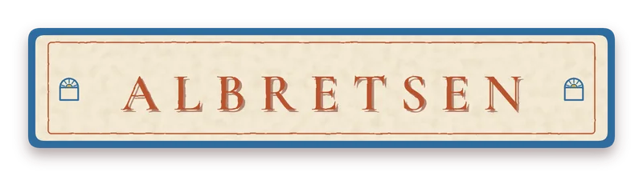
sign-albretsen · painted shop sign, alpha. For the top of the page or the footer.stamp-albretsen.svg · house stamp: the window at dawn over a fjord.
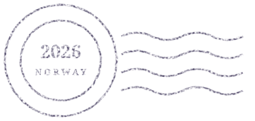
postmark.svg · inked postmark and cancellation waves.tile-provence.svg · repeats seamlessly; use as wainscot or section border.limewash-1024.webp · seamless wall texture, 26 KB.paper-1024.webp · seamless postcard stock, for cards and the blog.
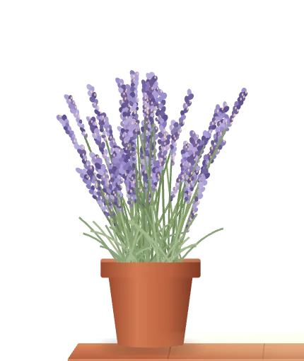
lavender-pot.webp · cut-out (alpha).layers/wall · wall with the window cut out, for parallax.layers/front · sill and lavender, the nearest layer.